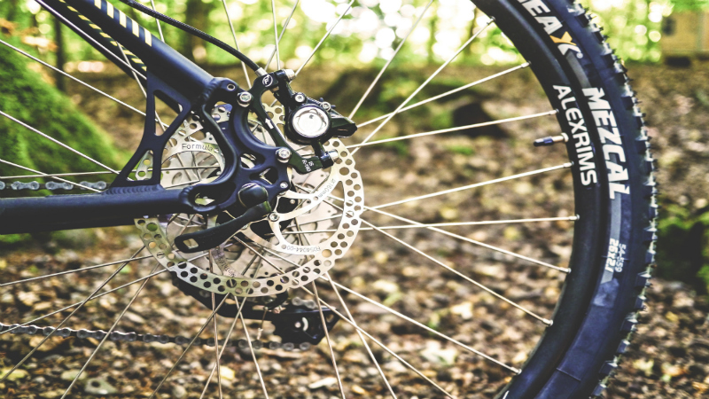
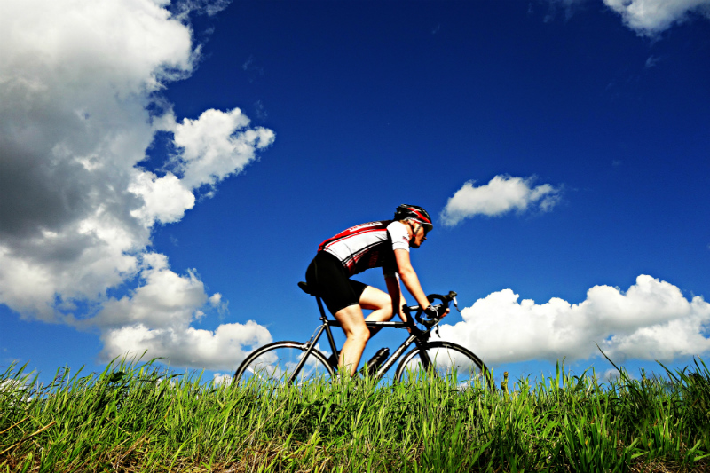

The Mountain Spoke
The Mountain Spoke is a retail store and shop located in Bozeman, Montana specializing in bicycles, bicycle parts, bicycle repair, and tours. The owner-operated company caters to bicycle enthusiasts in that region. In addition, the company also sponsors and organizes tours in the area to serious bicyclists from around the world.
